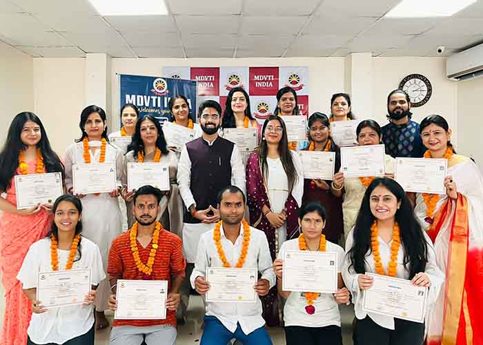

New to yoga
Start with the foundations and build an authentic practice.
Authentic yoga. Meaningful work. A life with purpose.
Most institutes teach yoga. Yogkulam builds yoga professionals with purpose—with a structured path from personal practice to teaching, therapy and service.

Recognition & learning support
Explore certification and exam-support options with our admissions team. Recognition and eligibility depend on the programme you choose.
Is Yogkulam right for you?
You don’t need to be flexible, young or experienced. Bring curiosity, sincerity and a willingness to learn.
Start with the foundations and build an authentic practice.
Make space for wellbeing, meaningful work and a new direction.
Grow confidence, knowledge and options for a future career.
Add a structured yoga perspective to your work with people.
Go beyond exercise and explore yoga in greater depth.
Build a steadier routine, mobility and a more mindful life.
No prior yoga or teaching experience required. Programme eligibility varies—ask us what fits.
Why Yogkulam
Yoga asks for more than memorising postures. Our learning connects practice, therapeutic understanding and the skills to teach responsibly.
About MDVTI IndiaExplore how yoga can support wellbeing alongside its wider philosophical roots.
Connect asana, breath, anatomy and philosophy—not just the shape of a pose.
Build class sequencing, communication and a professional teaching approach.
Find guidance on career choices, teaching practice and setting up a yoga studio.
What you will learn & receive
No vague promises. Explore the learning, resources and support offered across Yogkulam programmes.
Course features, hours, certification and support depend on the programme. Review the individual course page for details.
Yoga is more than asana
Build your understanding across yogic thought, body systems, daily practice and the responsibilities of teaching.
Read the PGDYT syllabusPhilosophy & yogic lifestyleClassical texts, ethics and daily practice
Anatomy & physiologyBody systems, alignment and injury prevention
Asana, pranayama & kriyaPostures, breath, mudra, bandha and shatkarma
Meditation & mental wellbeingFocus, stress management and mind-body awareness
Yoga therapy & naturopathyTherapeutic foundations and holistic perspectives
Teaching methodologySequencing, communication and professional ethics
Choose your learning path
Whether you want to learn, teach, explore therapy or deepen your own practice, start with the programme that matches your goal.
Post Graduate Diploma
Diploma
Specialist modules
The 1-year, 500-hour duration shown is for the PGDYT. Contact admissions for current availability, eligibility and details of other programmes.
Career pathways in yoga
PGDYT can prepare learners to explore teaching, therapeutic practice, entrepreneurship and digital work in yoga and wellness.
Career and income outcomes depend on your effort, experience, consistency and local opportunities. No particular income or job placement is guaranteed.
Yoga instructor · Corporate trainer · Online teacher · School and college teaching
Yoga therapy · Personal coaching · Sports yoga · Wellness facilitation
Yoga studio · Retreats and workshops · Wellness business
Online classes · Yoga content · Writing and education
Learners, teachers, community
Yogkulam brings learners together around study, practice and a common respect for yoga. Every learner arrives with a different story; the work begins with showing up.
Meet the teaching teamTeaching & learning approach
Your learning follows a practical sequence—from understanding, to personal practice, to preparing for your next step.
Join guided practice and build your theoretical foundation.
Develop your own routine, with support and opportunities to refine.
Understand your programme’s assessment and certification steps.
Explore teaching, therapy, further study or service in your community.
 Founder, Yogkulam
Founder, YogkulamA message from our founder
“I started Yogkulam to help people build a meaningful life and career through yoga. Now it’s your turn.”
Maneesh Pratap Singh founded Yogkulam around the belief that yoga education should connect learning with service, personal growth and a purposeful livelihood.
Maneesh Pratap SinghFounder, Yogkulam · Yoga educator
Our academic & ethical standards
We believe yoga education deserves honesty, care and commitment beyond a certificate.
Learning that values depth, not quick certificates
Career guidance without overnight-income promises
Yogic ethics as part of professional practice
Continued learner support after enrolment
Frequently asked questions
Not sure which programme is right? Talk with admissions about your goals and eligibility.
Call 1800-891-9232Yes. Yogkulam programmes are designed for learners at different levels. There is no prior yoga or teaching experience requirement; programme eligibility may vary.
Online and in-person options are available for some programmes. The PGDYT is listed as online / hybrid. Contact admissions for the current format.
Yogkulam provides YCB exam support. Ask admissions which support and certification route applies to your chosen course.
Classes are conducted in Hindi, with notes provided in English. Confirm the language options for your selected programme before enrolling.
Ongoing guidance is part of the learning support described by Yogkulam. Ask about the specific support included in the programme you are considering.
Begin with a conversation
Talk to our team about course eligibility, formats and what to expect.